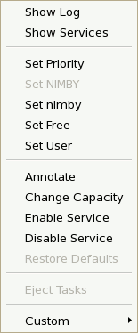
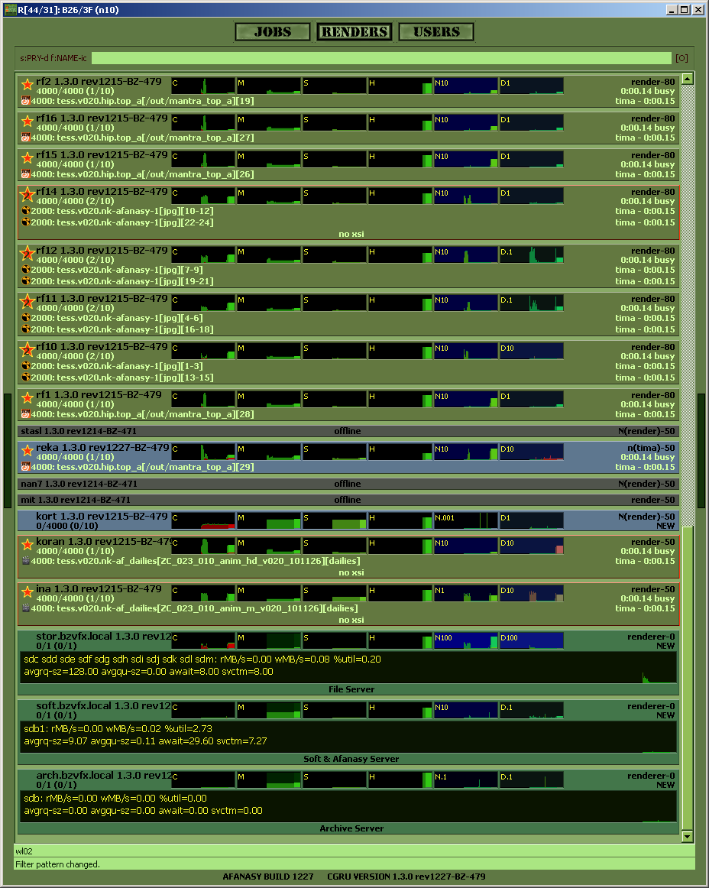
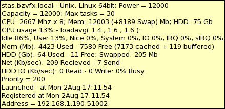
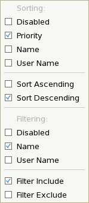
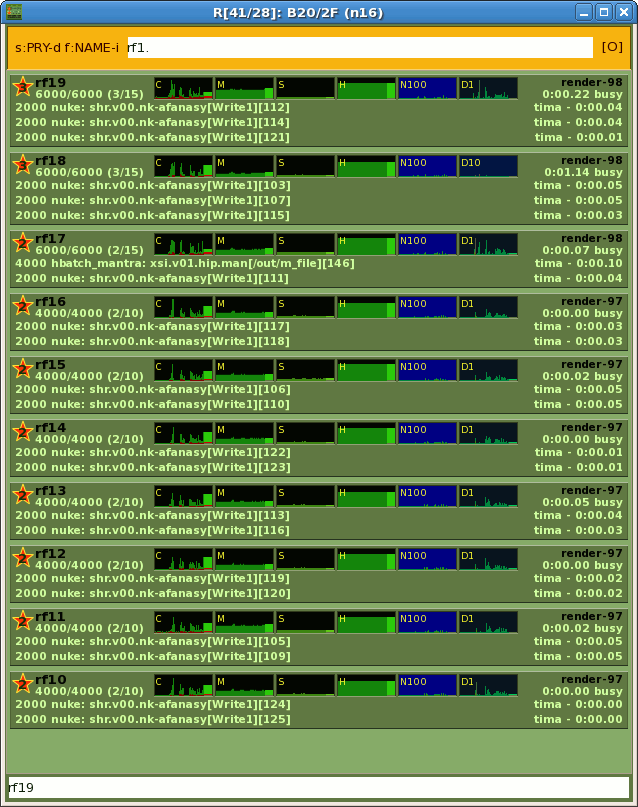

|
|
|
To open renders list in a separate window uses RMB on 'RENDERS' button.
|
RMB Menu  |
 |
Tooltip  Sort&Filter Control  |
||||
|
★ - means running task.
User-Priority:
renderer-180: user name = 'renderer', priority = '180'.
n(tima)-99: user name = 'tima', priority = '99', nimby is set.
N(renderer)-99: user name = 'renderer', priority = '99', NIMBY is set.
C : CPU from 0% to 100%
Green: user + nice (user processes with low priority (nice>0))
Red: system + IO wait + irq + softirq
M : Memory from 0 to total amount
Dark: cache + buffers
Green: used by applications
S : Used swap from 0 to total space.
H : Used HDD from 0 to total space.
N : Send and Received
traffic through all network interfaces exclude 'lo'.
.001 - 100 : Shows graph scale in megabytes per second.
D : Read and Write
read and write data on disk.
.001 - 100 : Shows graph scale in megabytes per second.
|
Renders Separate Window  |
You can open renders list in a separate window (RMB on 'RENDERS' button). It's useful to test job hosts mask with Sort&Filter. This is an example of renders list filtered by their name. |
| SourceForge.net Project | Раздел на форуме CGTALK.RU |